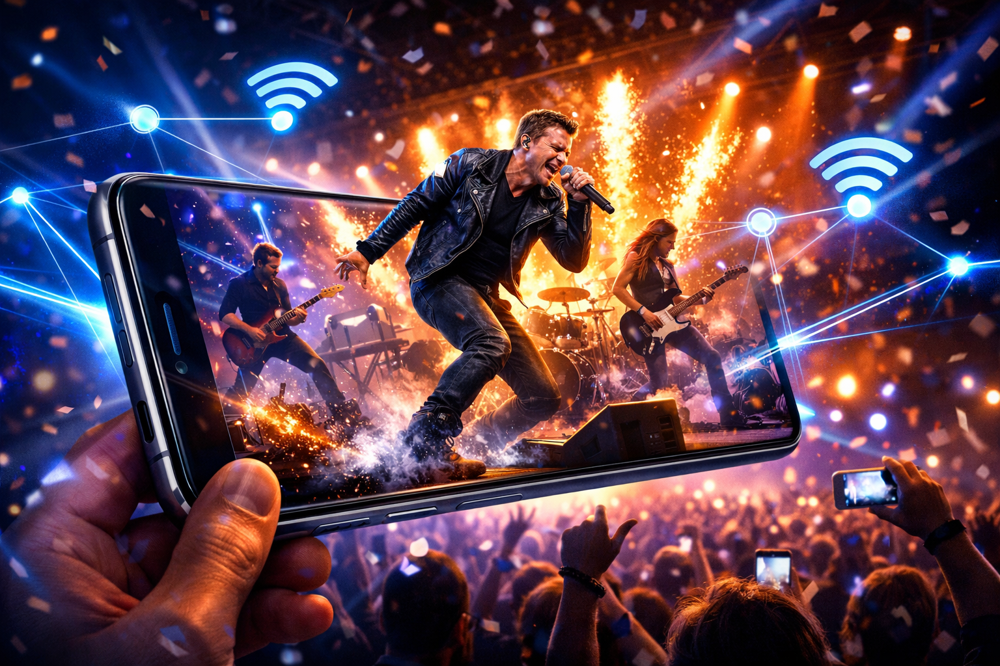

A dedicated live lane on the Jio network with ultra-low lag and crisp video. Some moments deserve better than buffering.
Discover Upcoming ShowsMost live streams suffer from the same problem — they compete with every other packet on the network. A viral moment sends millions to a stream at once, and quality degrades precisely when it matters most. JioLiveStage solves this by provisioning a dedicated network slice for each live event. The creator's upload gets a guaranteed high-bandwidth, low-latency lane. Every viewer on the Jio network receives the stream via a prioritised downlink path. The result is sub-second latency, consistent 1080p or higher resolution, and synchronised audio-visual that makes live chat reactions actually match the action on screen.
For creators, it means professional-grade live production without professional-grade infrastructure. For fans, it means no more spinning buffers during the chorus.
How It Works
A creator or event organiser schedules a JioLiveStage event through MyJio or the JioLiveStage dashboard. Jio provisions a dedicated upload slice for the broadcast device.
The 5G standalone core allocates a low-latency, high-bandwidth slice for the event. Viewers on Jio receive the stream via a prioritised downlink path, separate from general internet traffic.
Fans watch in crisp resolution with sub-second delay. Live chat, polls, and reactions are synchronised with the actual video feed, making the experience feel genuinely interactive and shared.
Features
Typical live streams have 5–30 second delays. JioLiveStage targets under 1 second, making live chat and audience participation genuinely real-time.
A dedicated network slice means quality doesn't degrade when thousands join simultaneously. Resolution stays at 1080p or higher throughout the event.
Real-time viewer analytics, stream health monitoring, audience engagement tools, and post-event performance reports — all built into MyJio.
Support for up to four synchronised camera feeds, letting viewers choose angles or enabling the creator to switch between shots.
Technical Specifications
Use Cases
An artist performs in Mumbai and 500,000 fans across India watch in sync. No buffering during the set, and the crowd chat reacts in real time.
A gaming streamer on JioLiveStage delivers crisp 60fps gameplay without the dropped frames that plague standard platforms during peak hours.
A retailer launches a product on JioLiveStage with live Q&A. Buyers see product details clearly, ask questions in real time, and purchase without leaving the stream.
JioLiveStage is available now for creators and event organisers on Jio True 5G. Fans on any Jio plan can watch LiveStage events in MyJio.